An All-Fruit Juice Press
By the Mother Earth News editors
October/November 1996
Make yourself some pocket money with one of the most beautiful and versatile tools you ever made.
Some of my most vivid childhood memories are of the crisp, sunny fall weekends we all spent out at the family homeplace when my farming great-uncle We'd "fahr up the cider press," as he put it. My cousins and I would drink as much fresh foaming cider as we could while taking turns cranking the crusher wheel.
So, when I bought my first farmstead back in the late sixties, one of the first tools of old-time country living I went looking for was a fruit-juice/wine/cider press. I envisioned the dirt-floored cold-storage cellar filled with bottles of wine made from pear juice mixed with the wild fox grapes that grow rampant in our woods and jugs of half-hard cider from the old apple and cherry trees growing up on the hill. The first trees I planted were cold-tolerant peaches, and I looked forward to pressing out peach nectar as well.
MATERIALS LIST
Kit or recycled metal parts for press and crusher
PT pine: #1 4x4x8, # 1 4x6x6, #1 2x4x8
Plywood: #1, 4x8x3/8 AC (exterior glue)
Hardwood: 10 bd. ft. 3/4" actual thickness
Threaded Steel Rod: 6' of 1/2"-thick rod
Nuts/Washers: 16 sets to fit threaded rod
U-bolts: #4, 7"-long x 1/4" diameter
5/16" Perf. Steel Strap: 2' x 1 1/2" wide
Eyebolts: #4, 3/8" or 1/2" x 5" or 6" long
Lagbolts, screws as required for frame. Waterproof wood glue, brads, wood screws.
I learned quickly that it was a rare year that plentiful rain (for plump fruit) during the ripening season, and breezy, dry air (that discourages molds) combined to produce great festoons of plump, sweet wild grapes ...and when it did, the fruit de veloped so high in the trees it was inaccessible to anyone but the birds. Most years, grape clusters were small, most fruit was mold-shriveled to mummies and the surviving grapes were small, hard and sour. In any year and any weather, the overgrown apple and pear trees produced fruit that was scarce, gnarly and worm-eaten.
With the enthusiasm borne of new-won freedom from the urban rat race, I pulled down grape vines growing in trees all around our pastures and propped them up at the sunny field edges on arbors improvised from saplings. I attacked the ancient fruit trees, savagely pruning out deadwood and overgrowth, scraping off thick, flaky bug-harboring bark and cleaning up and incinerating years' accumulation of pest-hiding trash. With judicious use of organic insecticides and antifungus sprays, I had some good apples the next year, and enough to juice by year three.
I'd found a press for sale in the (now defunct) big Sears catalog. A half-bushel-sized cylinder of wood slats held together with a pair of steel hoops sat on a hardwood drain board between a pair of wood posts supporting a horizontal cast-iron top brace that hosted a 1/2"-diameter vertical worm screw with a hand-crank on top. Turning the crank moved the screw downward to put pressure on a cast-iron foot screwed to a round wood traveler inside the hopper.
As soon as our early-bearing "Yellow Transparent" apple trees bore in late summer, I filled the press with whole fruit and cranked till the apparatus seemed near to breaking-but all it did was dent the skins. Later in the fall I filled it with grapes. They popped okay, but the slippery little eyeball-like innards oozed out through the cracks. Pears didn't bear at all that year-or for the next five years after being "restored." About all I harvested were clouds of fruit flies and squadrons of aggressive yellow jackets that came to visit my pressing room-the unscreened "el" between house and barn-once juice had soaked into the wood flooring and soured enough to float a strong fruity aroma. We got no cider that year. No wine either. The surviving fruit (with bugs picked out) went into sauce, jam and jelly.
On my first visit to a commercial cider mill, I learned that apples storage and pressing sheds were well screened against insects, and that apples must be shredded into "pomace" to even begin thinking of giving up their juice.
The first time we made jelly, the cookbook taught me the need for a stout fabric bag to contain grapes or any other product being juiced. But, next year-after I'd screened the el against bugs-even when I hand-chopped apples and squeezed them in a stout muslin pressing bag, the little press was unable to extract more than a glassful or so of thin and sour juice from each hopperload of our dry, old-time Yellow Transparent cooking apples. As I recall, the grapes were all fungus-shrunk into mummies that year. . . and the next, and the next. I gave up the dream of homemade cider and grape wine (though the dandelion wine was glorious) for the nonce. The little press sat around in a corner till a city cousin took a shine to it and hauled it home for use as a planter. To this day, it hosts potted ferns, philodendron and seasonal cut flowers in her front hallway.
Antiques
Time was that every farmstead of any size had a substantial fruit press. You'll find the old-timers for sale in the Country Classifieds and at antique barns and auctions now and again. Most are much larger versions of my little press, with huge screws to actuate the press foot, and slat hoppers that can hold the better part of a bushel of fruit.
Attached at the side of the pressing hopper or arranged over a second hopper to the rear of the press is the shredder or crusher. Crushers were made like old-time hand-crank clothes wringers with fluted wooden rollers that could be adjusted for different fruit-close together to crush rhubarb for wine or a cherry pit apart to crush that small stone fruit for juice-pear/sour-cherry cider. Shredders designed to handle tough-skinned, firm-fleshed fruit like semiripe juicing pears (that together with white grapes form the basis for most juice drinks) or cider apples were made of cast iron. Inside the grinding chamber was a set of spiked, counter-rotating metal burrs, or a wooden drum (6" wide and in diameter) fitted with short teeth that ground the fruit against another set of teeth or studs molded into the inner face of the grinder housing.
But unless the presses were carefully cleaned and greased after each use, acids in fruit residue promoted rust in the iron and rot in the wood-that, together with years in thoughtless barn storage rendered many antiques unfit for practical use. Meanwhile, the rugged appeal of their massive, richly stained wooden legs, big old worm screws and iron crank-wheels with gracefully curving spokes made them eye-catching planters or conversation pieces for upscale country homes. Today, old presses sell from a low-low $50 for a worn-out, worm-holed junker to $250 for a wobbly but working antique forgotten at the back of a country auction-barn to $700 and up ...and up ...the closer you get to a big city.
We found several working presses such as the marvelous 1874 "Homesteader" pictured in Michael Phillips's fine article on cider making in MEN No. 147, January 1995. But prices were above $700. Too stiff when (as you'll see, you can get the metal parts for an all-new press for half that). We considered restoring a bargain-priced old-timer-expecting to retain metal parts and replace tired, old wood-but discovered that the really old designs are nearly all wood.
Metal was scarce and lumber plentiful back then, and the journals and bearings that accept threaded wrought-iron press screws and gear hubs are little but large nuts held in holes chiseled into oak or chestnut yokes by ancient bolts, pins and straps. Disassembling and remanufacturing them would not be easy. Besides, in the presses we located, if the wood was dry-rotted beyond repair, the old iron parts were rusted away as well.
Press Construction
All the used homestead presses we saw were dated well before 1900. During the first half of the twentieth century, apparently fruit-juice pressing-like nearly all else-was relinquished to large mills and factories ...till folks like you and I and MEN founders Jane and John Shuttleworth decided that mass-produced quality was too low and the cost too high.
Since self-reliant country living became a popular life choice again during the 1960s and 70s, several entrepreneurs have accepted the challenge to resupply America with high-quality home-orchard cider presses. Results have been uneven (to be charitable) over the years. But today, a pair of small manufacturers in eastern Kansas, together with homesteading and gardening equipment suppliers everywhere, are offering competent presses based on the old designs that you can purchase by mail-in kits or assembled and ready to go-for less than the cost of a rickety antique.
See the Source List at the end of the article. Fruit-juice extraction is a two-step process: 1. crushing and 2. squeezing. (A press is not a "juicer" with rapidly whirring blades that can liquefy anything from tomatoes to carrots in a single, nearly instantaneous step. So don't pack away your VitaMix.)
The crusher breaks down the physical structure of the fruit-macerating skin, fracturing internal structure and rupturing individual cell walls; then the press applies many tons per square inch of pressure to force the juice from the smashed pulp. To apply consistent, effectively high pressure, the steel rod that forms the raw material of the screw that operates the press must be massive-2" in diameter or so.
The threads cut into it must be massive as well and have square "Acme"type shoulders rather than the sharp edge you see on threads of most screws and bolts. Acme screws have been a part of presses for generations. Oldtime crushers were made sturdy-with cast-iron housings and flywheels. But, in the early part of this century, the foundry molds for the old cast-iron crushers were lost. Redesigning and fabricating them was costly, so in recent decades the only widely available fruit crusher came with a wooden housing that was prone to get rickety, and a hand-crank that limited the amount of muscle that could be applied to it.
But last year, Happy Valley Ranch of Paola, Kansas, which has been making presses since the late seventies, has begun selling a crusher with a housing made from four iron castings held together like an old 6-plate cast-iron wood-burning stove with four stove bolts.It has a big iron flywheel with the traditional curved spokes that is heavy enough to maintain good momentum. Whole apples are gravity-fed from a hopper to fall into a bulge in the housing where they contact a revolving wooden drum fitted with rows of sharp, stainless-steel teeth. The apples revolve inside the grinding chamber as shreds are ripped off to pass between the spikes and down into the hopper of the press.
Last I heard, the wood-frame model was no longer available.
Options
For MOTHER'S new multiple-fruitorchards, we wanted a press that was sturdy enough to stand up to years of constant heavy use. All the old-timers we saw that were still functioning-like Mike Phillips's Homesteader that's still cranking out cider after 120+ years-were built from big, square timbers, dirtsimple and tough. Like milking stools, they all have three sturdy legs that give them instant stability on uneven ground. The two front legs hold a pair of horizontal beams.
The top horizontal supports the screw press, the bottom one supports the drain board that holds the slatted hoppers that contain the fruit pulp. In most presses, a pair of vertical metal rods running between horizontals at each side of the screw connect top and bottom horizontals; they absorb most of the screw-leveraged force that otherwise would have to be borne entirely by the wooden frame. (No modern presses have such reinforcements.)
The front legs are connected to a third, rear leg by the drainage board at the bottom, and at the top, by a pair of beams spaced just far enough apart that the grinder can rest between them. Pulp from the grinder falls to a hopper below. When full, that hopper slides forward under the press. The just-pressed hopper is emptied of squeezed-dry pomace (carried a ways off to keep the yellow jackets busy) and placed under the crusher for a refill.
Today's Presses
Like it or not, presses made today must be designed to break down into components that meet the 40" or so maximum size and 50 or 75 pound maximum weight of UPS and other express carriers. Plus, hardwood has become so expensive, that really massive, one-piece oak or hickory beams aren't practical anymore unless you grow and log your own. So, wooden frameworks are made of inch-thick maple or other hardwood boards that are planed to 3/4" and glued into laminates. The typical press has 3 1/2-"thick, 38"-long laminated legs, which are up to 50 percent stronger than onepiece boards of the same size.
Large expanses of wood such as the drain board are made from plywood rimmed with maple scrap. The designs themselves are complex, providing strength with a lot of little pieces that nest into notches cut into in one another (and that fit into shipping cartons) rather than a few simple, massive beams. In MOTHER'S view, the old style is not only simpler, it can be made cheaper-from common air-dried construction lumber rather than kiln-dried, furniture-grade hardwood. A massive softwood press is not only lighter than its hardwood counterpart-it looks better. Somehow, big old thick beams fit the scale of the metal parts (designed after authentic old-time originals) better than spindly little laminated hardwoods-though technically, the laminates may be stronger.
Schlock
Plus, we were less than satisfied with the wood parts of the (unassembled) twinhopper kit we sent off for (from a supplier that will remain unnamed, but which turns out a typical product). Maybe its a symptom of the times, but we found the workmanship sloppy and materials cheap. Most wood was good-enough clear maple. But some contained faults that had been puttied over. One joint was split by a nail. Bolts were bright zinc-plate and sure to rust in time, while thin-wood parts such as a questionably practical slat bottom for the drain board were fastened with power staples that can rust out in no time. The iron castings lack the polished look of the old-timers (having that suspiciously rough Taiwan-made look we see on cheap wood-burning stoves).
But, unlike a cheap stove, the castings are heavy, thick and sturdy-everything they need to be. So, we adapted the sturdy cast-iron and steel parts of the kit to an old-style design of our own using common building-construction-grade 2 x 4 and 4 x 4 softwoods, plus a few lengths of hardwood for the hopper slats, and part of a sheet of plywood. You can get it all for under $50 total. We also replaced much of the supplied hardware with rustproof stainless galvanized steel at an added cost of $10. MOTHER'S total cash cost for metal parts and materials (express charges included) came to a little under $400.
Costs
A juice press ain't cheap any way you go about it. We looked into cutting costs by building from scratch and adapting industrial Acme-thread screws and commercial-grade grinders to a home fruit press.
A press is possible if you have a good scrap yard to rummage through, but you'll need welding equipment and skill plus a metal-working shop. Compared to any commercial counterpart, Happy Valley Ranch's new grinder is a howling bargain at $170. Together with the flywheel, it weighs almost 50 pounds-that's less than $3.50 per pound.
The balance of the metal parts: horizontal braces, beautifully machined 2' long x 1 1/2"-thick Acme-threaded steel screw plus iron foot and handle plates and hopper hoops add another 50 pounds and cost about $150. Before you accuse MOTHER of becoming extravagant in her middle years, interpret the $400 cost in terms of gallons of apple cider.
What does fresh cider cost where you are? In New England, fresh and bubbling off the press, it runs about $10 a gallon. So, the essentials for a press cost as much as 40 gallons of cider (or put another way, to buy a press you need to sell only 40 gallons of cider). At about 120 apples a bushel, harvesting a typical 10 bushels of apples from a standard tree and getting three gallons of cider per bushel of good apples, your press will set you back the equivalent of a little more than one tree's production for one year.
Or, think of it in terms of custom pressing. A commercial cider press'll charge 75 cents a gallon but requires a 10-bushel minimum. That leaves all the small orchard, homestead-sized fruit growers for your custom-pressing operation. Don't you charge by the gallon, as you may be given dry apples; charge $3 a bushel to custom press neighbors' small lots (or $1 per peck-1/4 bushel-for really small lots.)
The press will buy itself by pressing 100 bushels. Grinding one bushel and pressing another takes about five minutes, so custom pressing can net you and a helper over $30 an hour if you keep at it. At that rate, you and your spouse can buy your press in two easy days or a week or a month of casual drop-in pressing jobs. Do it on a BYOCJ (bring yer own cider jugs) basis, or else charge twice what you have to pay for prewashed 1-gallon glass containers or plastic milk jugs.
I know one fellow who uses his press to make wine: rhubarb/strawberry in the spring and apple/currant in the fall. He dilutes it with mountain spring water and doses it with sugar to make palatable wine, ferments it in huge carboys, bottles and sells it for $5 per bottle and up. Bottling, licenses and marketing take a share of the proceeds, but on a gross basis his press brings him well over $100 an hour. I could work up a real sweat at that wage. How about you?
Buying Wood Parts
You can also buy a kit for a 2-hopper press with the wooden parts cut to shape for another $200. That too may seem expensive, but most of it is clear maple. The press comprises about 50 board feet of finished wood. (A board foot is one square foot of hardwood lumber, 1" thick. But, you pay for rough wood 1" thick that must be edged and surface-planed to 3/4" thickness to be worked.
In general, you need half-again as much rough wood, or 75 rough bd. ft. to get 50 sq. ft. of finished inch-thick lumber. Rough maple costs $2.50/bd. ft. So, 75 bd. ft. costs $187.50. To have it planed smooth at the mill, add $25. Total = $212. And then you must make laminated beams and cut it all to shape. If you have a wood shop with a surface-planer, you save the planing fee and can decide your own dimensions and quality. But, you are doing all that work to save only $12.50 off the $200 cost of a ready-to-assemble kit. Of course, an assembled kit only costs $30 more for a total of $550 (plus delivery).
Let's see, at $10/gal. and 3 gal./bu. and 10 bu./tree, it takes less than two trees' annual production to buy it. Still a bargain.
Finish In the old days, the wood of farmstead presses was preserved with linseed oil, the iron with petroleum jelly mixed with carbon black, and the screws with lard, axle grease or whatever was handy. How much of what got in the juice it hard to say; folks suffered a lot of mysterious intestinal upsets back then. More recently, we've been advised to preserve the press all over with vegetable or mineral oil, or grease the metal and shellac or varnish the wood.
These all require periodic refinishing. The most recent advance in finishes is $20 a can epoxy spray paint that is touted as a 1-coat preserve-all that lasts forever. From years of building and repairing boats and trying all the latest hotly promoted resins and polymers as they came along, we've learned that modern "wonder-plastics" are overpromoted.
Plus, all the epoxies we've seen are susceptible to damage from the ultraviolet rays of sunlight. They can check, crack and peel or turn gooey in a few hours of direct summer sun, so must be protected with an opaque-pigment paint or by being kept inside the barn most of the time. MOTHER wanted a hard-working fruit press that could be hauled to the orchard and left under a tarp throughout a sequence of harvests-not a suburban conversation piece needing fine-furniture care. She didn't want her brood drinking wine, apple cider or pear/grape elixir laced with paint residue or mineral oil either.
So, we determined to use galvanized fasteners (replacing rust-susceptible brightmetal bolts everywhere possible) and to coat both wood and metal with honest vegetable oil-even if that meant we had to keep the metal well greased during the pressing season, and to reoil the whole press before storing it for the winter.
The Crisco Treatment
Our frame is made from rot-proofed pressure-treated (PT) lumber, so it should last forever with an occasional dose of deck preservative. Of course, all wood in the tray, hoppers and anything else that might touch apples or juice is of non-PT ply wood or hard maple. It is soaked in a highquality cooking oil or shortening. We used name-brand Canola oil, which contains less than 1 percent fat to remain greasy. Reportedly, a top-quality hard shortening will do as well, but many cheap corn- or soy-based liquid shortenings leave a sticky residue. So, test your oil by applying it to a small section of wood before chancing that you might permanently gum up the whole press.
To assure that the wood would soak up as much oil as possible, we put the cut-to-shape pieces in full sun till warm, liberally oiled the wood, then laid it in a trough (a sturdy cardboard box) with a black plastic sheet forming both a leak-proof bottom and a sun- and heat-absorbing and rain-proofing cover. The wood was kept in the sun for a few days, turned and basted every morning-being sure to get oil down into the drill holes-then wiped dry.
This is the same care as folks gave to heating stoves and the fireboxes of kitchen ranges back in the days before modern steel fasteners and stove cements made stoves that hold together for decades. A fruit press is a technology that hasn't been modernized at all-indeed, it comes to us essentially unchanged from an earlier age.
Whether you succeed in recycling an oldster, or build new from entirely or partly bought parts, a fruit press will set you back as much as a small-to-middling-sized wood-burning stove. It deserves the same old-time TLC you tender the heater, and if maintained properly the press will repay you as often and as well. What better melding of good old-old-time low-tech than to pop some home-split wood in the stove to brew up a pot of spiced, mulled cider that was homemade on a home-built press using home-grown fruit. That's the real "home-squeezins," as my great-uncle Will used to put it.
The drawings and captioned photos show how you can build a three-legged press of your own.
|
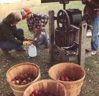 Photo: Dennis Barnes Illustrations: Steve Katagiri |
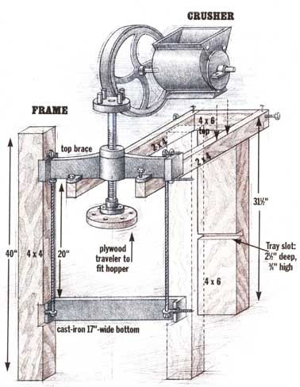 For the front legs to hold the iron-press supports, inner faces of two 40"" lengths of 4 x 4 PT southern pine were notched (3 1/2"" square and 1/2"" deep) by making multiple parallel saw cuts and chiseling out the soap. Then they were bored through with a 3/8"" augur bit under bolt holes cast into attachment flanges of the iron-press supports |
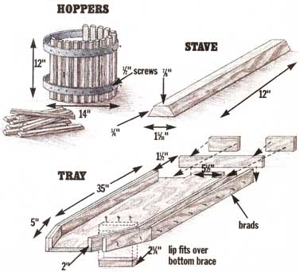 Horizontal crusher supports were made of 2 x 4 x 36"" PT, left long at flee front to support wheelbarrow-style handles if we end up putting wheels on the legs. Here, boards are being notched to fit up into the iron-press beam. |
 We used eye bolts to fasten press supports to front legs, locating eyes on the outer face of the legs and bolting on supports through the inner, threaded end. Then we ran 28"" lengths of 1/2"" steel threaded rod through the eyes. Heavy bolts were tightened behind flat washers at the tap and bottom |
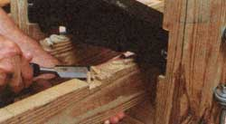 For easy disassembly, crusher support is attached with U-bolts and lengths of 1 3/8""-wide prepunch steel strapping. Note the shallow notches inside the 2 x 4s, which we reinforced with 3/8"" plywood. Unaccountably, support mounts on the crusher were 1"" wider than those cast into iron support. |
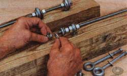 The rear leg was made of a 30"" length of 4 x 6 PT, notched at each side to accept a center-mortised, 8""-wide T that is also notched out at each side to accept the rear ends of the 2 x 4 grinder support beams. The joint is boxed with squares of plywood fastened with deck screws. The crushersupport assembly was originally held to the rear leg with an eye screw that runs down through the T and into the top of the leg beam. The screw was inadequate, and (after this photo was taken) we ran a length of threaded rod through the box sides and leg and bolted it at each end. Next time, we'll make the joint a dovetail |
|
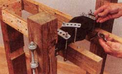 The tray (holding a partly assembled hopper) is installed. A lip fastened to the tray bottom goes over the lower press support (sturdy cast iron, but boxed in with plywood to hold it in place better than the screw mounts supplied). The rear of the tray will be slipped up into the notch cut into the rear leg and held in place with more threaded rod |
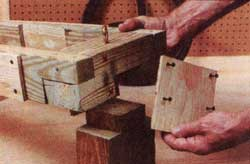 In a trial assembly (only the rear hopper has been oiled), the front hopper is left open to show how the iron-press foot fits to the bottom of the screw and pushes down on the wooden follower that tops the bag of pomace being juiced |
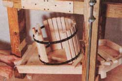 Notches are fashioned by making parallel saw cuts dose together and chiseling out the scrap |
|
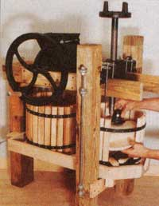 Flanges that fit across the upper press support to connect ends of U-bolts were ground to remove hacksaw burrs and to round corners |
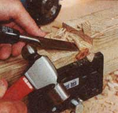 |
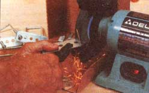 |